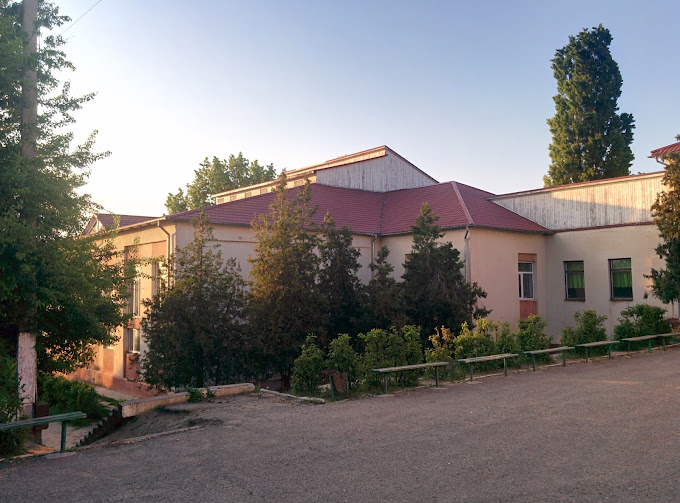
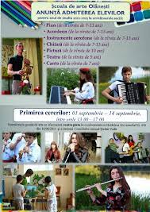

Pe teritoriul primăriei s. Olăneşti funcţionează următoarele instituţii social culturale:
- I.P.Liceul Teoretic "Bogdan Petriceicu Hasdeu"
- Scoala de arte satului Olanesti
- Biblioteca pentru maturi
- Biblioteca pentru copii
- Gradinita nr:4
- Gradinita nr:1
- Ambulanta
- Testare Auto
- Centrul de Asistenta Sociala pentru copii
- Sediu pentru polițiștii de frontieră |
Liceul Teoretic "Bogdan Petriceico Hasdeu"
 Galeria liceului{kind=link}
{kind=link}
Liceul Teoretic "Bogdan Petriceicu Hasdeu" s. Olanesti. Liceul in care majoritatea elevilor din
Olanesti si din satele vecine isi fac studiile.
Profesori de inalta calificare,
Sali de calculatoare dotate cu calculatoare performante,
2 Sali sportive renovate,
Auditorii bine amenajate,
Sala de festivitati.
A accentuat, că colectivul de cadre didactice este unul de forță, numărând
00 de profesori și învățători, dintre care 0 sunt deținători ai gradului didactic întâi și 00 – ai
gradului didactic II. Sunt instruiți
000 elevi, repartizați în 00 de clase. La ziua actuală instituția dispune absolut de tot necesarul
pentru o instruire de calitate: 0 laboratoare, 0 centre de resurse, cabinetul psihologului,
în interior și 0 terenuri în aer liber, baschet/volei și fotbal, o sală de tenis. Cantina
cu sală de mese, ce numără 000 locuri, unde se alimentează toți discipolii instituției de învățământ
Scoala de arte satului Olnaesti
 Galeria scolii{kind=link}
{kind=link}
La 1 septembrie 2001 instituția primește statut de școală de arte și la moment aici activează 7 secții: instrumente populare – acordeon, baian, nai, fluier; instrumente aerofone – trompetă, flaut, clarinet, saxofon; instrumente cu coarde – vioară, contrabas, chitară; artă vocală – canto academic, popular, estradă; coregrafie; artă teatrală; artă plastică.În prezent în școala de arte Olănești învață 000 de elevi. Școala are filiale în satele Crocmaz și Tudora.
Pe parcursul acestor ani școala de arte au absolvit 0000 de elevi, dintre care 00 au continuat studiile în domeniul muzical. Din cei 00 de pedagogi 0 sunt absolvenții școlii
Biblioteca Publică din Olănești
{kind=link}
Anul 2022 este un an aniversar pentru biblioteca publică din Olănești , fiind marcată aniversarea de 70 de ani de la fondare. Cu prilejul acestui frumos eveniment, pentru comunitatea Olănești, biblioteca a organizat și desfășurat un amplu și consistent program, intitulat sugestiv Săptămâna ușilor deschise, în cadrul căreia fiind disponibile mai multe activități: revista informativă: Biblioteca un facilitator în procesul de formare a comunității; dialogul public: Rolul bibliotecii în viața omului. Vocea comunității; medalionul literar Biblioteca sunt eu; revista informativă Biblioteca Publică între lectură și tehnologiile informaționale. De asemenea, în cadrul Zilelor Bibliotecii a fost dat startul expoziției Din noul stoc de carte. Zilele Bibliotecii Publice din Olănești au culminat cu o activitate profesională – medalionul literar aniversar Cuvinte potrivite cu dragoste stropite. Xxxxxxx Xxxxxxx, directoarea instituției, a menționat că biblioteca vine spre comunitate cu îndemnul la lectură, la asumarea valorilor spirituale, la cunoaștere, apreciind rolul ei în modelarea tinerilor generații, fiind ferm convinsă că oricât nu s-ar dezvolta tehnologiile informaționale, valoarea cărții rămâne incontestabilă. Vezi mai departe
Gradinitele

Grădiniţa cresa de copii Nr.1 "Poienita vesela" ,unde frecventează 00 copii,colectiv de
educatori
00,ajutori de
educatori – 0,lucrători de deservire 0
Grădiniţa cresa de copii Nr.4 "Albinuta" cu 000 locuri,
unde
frecventeză
000
copii, colectivul de educatori 00, ajutori de educatori 0,l ucrători de deservire 0
Centru pentru copii în care au fost create condiții perfecte pentru a petrece timpul în confort,
pentru dezvoltarea armonioasă și formarea cu succes a copiilor.
În cadrul centrului, pentru copii a fost creat un mediu sănătos, ecologic. Podele de plută –
material natural, termoizolant, care nu permite să se adune praf. După ore, în clase sunt conectate
dispozitive bactericide, care contribuie la eliminarea virușilor. Datorită sistemului modern de
ventilație, aerului proaspăt mereu pătrunde în încăperile instituției, fără aerisire și curent.
Programa educațională este elaborată conform Standardelor Naționale, cu suportul softurilor
educționale pe tablele smart.
Atmosferă agreabilă, până la 00 copii în grupă, atenție maximă acordată de profesor fiecărui copil
în parte. Siguranță și supraveghere video. Cadre didactice care își efectuează activitatea cu
entuziasm și dragoste, și care tind permanent spre dezvoltare.
Activitățile de pregătire pentru școală se desfășoară zilnic, de luni până vineri, de la 0:00 până
la 00:00 și de la 0:00 până la 00:00. Matematica, citirea, limba engleză, arta vorbirii, literatura,
cunoașterea mediului ambiant, ”Eu și Societatea”, arte plastice, muzică, coregrafie. Logopedie, o
mulțime de cursuri opționale pentru copii cu diferite interese și talente – educația financiară,
ceramică, laborator etc.
Grupe: predare în limba română.
Vârsta: de la 0.0- 0 ani
Ambulanta
{kind=link}
La data de 17 februarie curent a avut loc deschiderea unui sediu nou, destinat amplasării Punctului
de Asistență Medicală Urgentă Olănești din cadrul SAMU Ștefan Vodă. Angajații se vor bucura de
condiții optime de lucru într-un edificiu construit din temelie, care corespunde tuturor
standardelor din domeniu și este conectat la toate utilitățile (încălzire; apeduct; canalizare și
electricitate)
În cadrul punctului de urgență activează 00 angajați și deja a fost suplimita inca o echipa
de asistență medicală urgentă. Aria de deservire a PAMU Olănești cuprinde șapte
localități rurale: Olănești; Palanca; Tudora; Crocmaz; Antonești; Carahasani și Căplani cu o
populație de aproximativ 22.000 locuitori.
Testare Auto
Centrul de Asistenta Sociala pentru copii
{kind=link}
In prezent, centrul gazduieste 14 copii de varste diferite. Toti micii rezidenti au ajuns aici din
diferite motive. Dar toti se simt nesiguri in ceea ce priveste viitorul, toti au nevoie de atentie
si
sprijin.
Dupa cum stim, necesitatile copiilor mai mici si adolescentilor sunt foarte diferite, ceea ce
creeaza
dificultati suplimentare in procesul de educatie si ingrijire a copiilor de varste diferite. Dupa
consultarea cu administratia institutiei, am achizitionat totul ce a fost solicitat pentru elevi.
Pentru
Centrul de Asistenta Sociala din satul Olanesti s-au oferit: un covor, doua mese, scaune pentru
copiii
prescolari, doua scaune inalte pentru hranirea copiilor, jocuri de masa. De asemenea, s-au donat
produse
chimice de casa: din experienta noastra stim ca este intotdeauna nevoie urgenta de aceasta. Copiii
au
primit dulciuri si fructe, iar noi am primit o mare bucurie din zambetele lor.......etc.
Sediu pentru polițiștii de frontieră |
{kind=link}
{kind=link}
Direcţia regională EST este o subdiviziune subordonată Inspectoratului General al Poliţiei de Frontieră care realizează sarcinile instituției şi implementează politicile statului în domeniul Managementului Integrat al frontierei de stat la nivel operaţional. Direcţia regională EST are statut de persoană juridică de drept public, cu finanţare de la bugetul de stat, dispunând de ştampile cu imaginea Stemei de Stat a Republicii Moldova şi de cont trezorial. În conformitate cu prevederile legislaţiei în vigoare, sarcinile principale ale Direcţiei constau în realizarea, în limitele competenţelor, a acţiunilor de prevenire, depistare şi contracarare a migraţiei ilegale şi a altor infracţiuni transfrontaliere legate de circulaţia ilegală a persoanelor şi mijloacelor de transport, constatarea contravenţiilor legate de şederea ilegală a străinilor şi de trecerea ilegală a frontierei de stat de către persoane şi mijloace de transport, efectuarea măsurilor speciale de investigaţie şi, nu în ultimul rând, participarea la asigurarea ordinii de drept internaţionale la frontieră, precum şi la activitatea reprezentativă de frontieră. În activitatea de control a frontierei de stat, Direcţiile regionale, în limitele competenţelor, îndeplinesc şi alte sarcini prevăzute de legislaţia în vigoare.
Primarul satului Olanesti
{kind=link}
Iurie Ostafi
Director liceului
Angela Arpenti
Director scolii muzicale
Ecaterina Terzi
Director bibliotecii
Liubovi Moldovanu
Publicitate
Moldova Banc
Director gradinitei "Poienita Vesela"
Liudmila Bagrin
Director gradinitei "Albinuta"
Svetlana Gadiiac
{kind=link}
Apteca.md

| Program de lucru | |
|---|---|
| Luni | 00:00 |
| mart | 00:00 |
| Mercuri | 00:00 |
| Joi | 00:00 |
| Vineri | 00:00 |
| Simbata | 00:00 |
| Duminica | 00:00 |
Sa nu-ti fie jale de copii nevoiasi
Ajută-Mă!-CCF Moldova
UNICEF pentru fiecare copil
Direcţia regională EST are în subordine următoarele subdiviziuni de frontieră:
- Sectorul Poliţiei de Frontieră „Troiţcoe”
- Sectorul Poliţiei de Frontieră „Tocuz”
- Sectorul Poliţiei de Frontieră „Săiţi”
- Sectorul Poliţiei de Frontieră „Volintiri”
- Sectorul Poliţiei de Frontieră „Caplani”
- Sectorul Poliţiei de Frontieră „Olăneşti”
- Sectorul Poliţiei de Frontieră „Tudora - 1”
- Sectorul Poliţiei de Frontieră „Tudora - 2” (PTF)
- Sectorul Poliţiei de Frontieră „Pervomaisc”